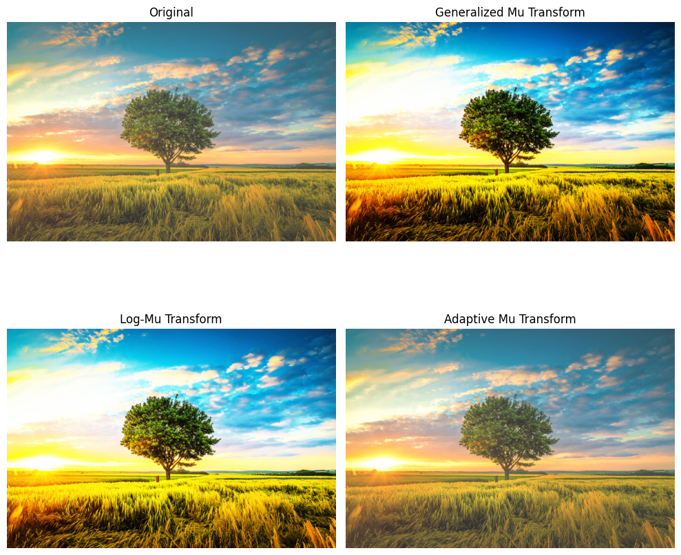

Mu Transform
Mu transform is an image enhancement technique. In this post, we will introduce 3 variants of mu transform.
In image processing, Mu Transform (μ-Transform) is a non-linear transformation used to enhance image contrast, particularly in applications like medical imaging and remote sensing. It is a type of contrast enhancement technique that adjusts pixel intensities to improve visibility of details in an image.
1. Generalized Mu Transform
$$
\begin{equation}
I^{\prime} = \frac{I^{\mu}}{I^{\mu} + \lambda(1 - I)^{\mu}}
\end{equation}
$$
where:
- $I$ is the normalized input pixel intensity (ranging from 0 to 1).
- $I^{\prime}$ is the transformed output pixel intensity.
- $\mu$ is the transformation parameter that controls the contrast enhancement.
- $\lambda$ controls the balance between bright and dark regions. When $\lambda > 1$, it increases contrast in bright regions. When $\lambda < 1$, it enhances dark regions.
2. Log-Mu Transform
This variant combines the logarithmic transformation with the Mu Transform to enhance details in both dark and bright regions:
$$
\begin{equation}
I^{\prime} = log(1 + c \times \frac{I^{\mu}}{I^{\mu} + (1 - I)^{\mu}})
\end{equation}
$$
where
- $c$ is a scaling constant.
- This variant is useful for HDR (High Dynamic Range) imaging.
3. Adaptive Mu Transform
Instead of using a fixed $\mu$ for the entire image, an adaptive version computes $\mu$ based on local image statistics (like mean or variance). A common approach is:
$$
\begin{equation}
\mu(x, y) = \alpha + \beta \times Var(I_{local})
\end{equation}
$$
where:
- $\alpha$ and $\beta$ are user-defined parameters.
- $Var(I_{local})$ is the local variance around pixel $(x,y)$.
- This allows spatially adaptive contrast enhancement, which is useful in medical imaging and low-light conditions.
4. Example
1 | import cv2 |

Mu Transform